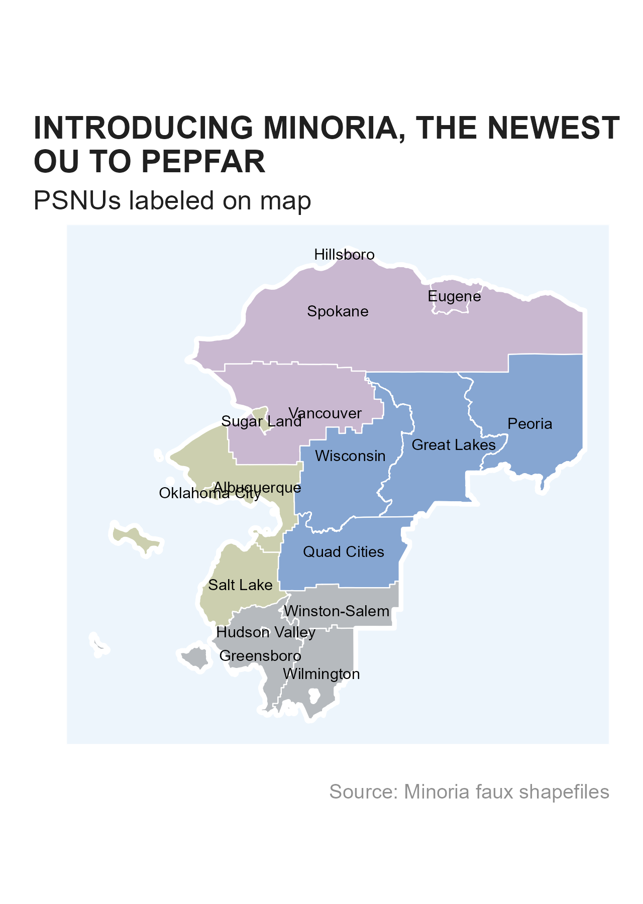

accessing-data.RmdIn OHA/SI, we our days are filled with pouring over MER Structure Datasets (MSD). These data help inform programming and to make policy decisions, largely through visualization to communicate our analyses. MER data are not publicly available in the forms we have access to.work with, which makes it challenging to share work products, develop training material, or test database schemas. To alleviate these concerns while keeping true to our dataset structure, we have developed a masked data that can easily be supplemented or stand in place of the MSD.
The training dataset is masked with geographic and team names from Minor
League Baseball to stand in for snu1,
psnu, mech_name and
prime_partner_name. Other unique identifies, e.g. “uids”,
have been generated (msk_gen_uid()) or in more limited
cases have been striped out entirely. The masked operating unit/country
is the Kingdom of Minoria, which consists of four regions,
snu1, each with four districts, psnu
(minoria_geo).

The data consist of only indicators from the PEPFAR HIV clinical
cascade (see gophr::cascade_ind).
Since these data have been masked, we are able to host them
publicly on our GitHub repository via releases. Each quarter, we
will do our best to update here for your use. To view the PEPFAR MSD
schedule, see glamr::pepfar_data_calendar. There are a few
different ways for you at access the data to start using them.
The easiest way to access the data are directly from R using this
package. We have built a wrapper around the piggyback
package to work with releases. You can use msk_available()
to check the latest masked MSD version available and then
msk_download() to download the data. The
msk_available() will give you a warning if there is a newer
MSD available if you want to create your own version.
#Install OHA packages from rOpenSci
oha_pkgs <- c("gophr", "glamr", "glitr")
install.packages(oha_pkgs, repos = c('https://usaid-oha-si.r-universe.dev', 'https://cloud.r-project.org'))
#Load Dependencies
library(themask)
library(dplyr)
library(gophr)
library(glamr)
library(ggplot2)
library(glitr)
#check if you have the latest version available
msk_available()
#> The latest available masked dataset is PSNU_IM_FY59-61_20240614_v2_1
#> All available masked dataset for download:
#> ✔ 2024.06.14.c [latest]
#>
#> • 2024.05.17.i
#>
#> • 2024.03.15.c
#>
#> • 2024.02.15.i
#>
#> • 2023.11.14.i
#>
#> • 2023.09.15.c
#>
#> • 2023.06.16.c
#>
#> By default, the latest file is downloaded but you can specify the version from
#> above list in the tag param of `msk_download()`From the file path, we can see the date and version in the file name which will match the MSD releases. From this file, we can see that the latest masked version available is from 2023-09-15, which is from Q3, and the v2 indicates this is the quarter’s clean version (as opposed to the initial which would be v1).
To download, we can just run msk_download().
#download folder path
download_folder <- temp_folder()
#> ℹ A temporary folder is now available here: '/tmp/RtmpMcT4oe/file1963643dfee0/'
#> ℹ The folder path is stored as the object `folderpath_tmp`
#download
msk_download(download_folder)
#> ✔ The masked MSD has been downloaded to /tmp/RtmpMcT4oe/file1963643dfee0In the above example, we could have specified the param
launch = TRUE which opens up the Window’s folder specified
automatically. The other parameter not used is the tag,
which you can use to specify an
older, available version to use,
e.g. tag = 2023.05.31.i.
To load the data into R, you can use your normal
gophr::read_psd() to get going.
df_msd <- return_latest(download_folder, "PSNU_IM") %>%
read_psd()
#> ℹ Latest file in 'file1963643dfee0' matching 'PSNU_IM':
#> 'MER_Structured_TRAINING_Datasets_PSNU_IM_FY59-61_20240614_v2_1.zip'
glimpse(df_msd)
#> Rows: 53,641
#> Columns: 48
#> $ operatingunit <chr> "Minoria", "Minoria", "Minoria", "Minoria"…
#> $ operatingunituid <chr> "kAYJjRwuXG6", "kAYJjRwuXG6", "kAYJjRwuXG6…
#> $ country <chr> "Minoria", "Minoria", "Minoria", "Minoria"…
#> $ snu1 <chr> "Midwest", "Midwest", "Midwest", "Midwest"…
#> $ snu1uid <chr> "Dh3xiXWw0Z7", "Dh3xiXWw0Z7", "Dh3xiXWw0Z7…
#> $ cop22_psnu <chr> "Quad Cities", "Great Lakes", "Great Lakes…
#> $ cop22_psnuuid <chr> "FBzC1U92lJn", "gwmjspIcLT4", "gwmjspIcLT4…
#> $ cop22_snuprioritization <chr> "1 - Scale-Up: Saturation", "1 - Scale-Up:…
#> $ psnu <chr> "Quad Cities", "Great Lakes", "Great Lakes…
#> $ psnuuid <chr> "FBzC1U92lJn", "gwmjspIcLT4", "gwmjspIcLT4…
#> $ snuprioritization <chr> "1 - Scale-Up: Saturation", "1 - Scale-Up:…
#> $ typemilitary <chr> "N", "N", "N", "N", "N", "N", "N", "N", "N…
#> $ dreams <chr> "N", "N", "N", "N", "N", "N", "N", "N", "N…
#> $ prime_partner_name <chr> "Captains", "Captains", "Chiefs", "Captain…
#> $ funding_agency <chr> "HHS/CDC", "HHS/CDC", "HHS/CDC", "HHS/CDC"…
#> $ mech_code <chr> "01498", "01498", "01470", "01498", "01568…
#> $ mech_name <chr> "Captains", "Captains", "Chiefs", "Captain…
#> $ is_indigenous_prime_partner <chr> "Y", "Y", "Y", "Y", "Y", "Y", "Y", "Y", "Y…
#> $ indicator <chr> "HTS_TST", "TX_CURR_Lag2", "TX_PVLS", "HTS…
#> $ numeratordenom <chr> "N", "N", "D", "N", "N", "N", "N", "N", "N…
#> $ indicatortype <chr> "DSD", "DSD", "DSD", "DSD", "DSD", "DSD", …
#> $ standardizeddisaggregate <chr> "Modality/Age/Sex/Result", "Age/Sex/ARVDis…
#> $ categoryoptioncomboname <chr> "25-29, Male, Negative", "<15, Male, ARV D…
#> $ use_for_age <chr> "Y", "ARVDispense", "Y", "Y", "Y", "Y", "Y…
#> $ ageasentered <chr> "25-29", "<15", "45-49", "01-04", "35-39",…
#> $ age_2018 <chr> "25-29", "Coarse", "40-49", "01-09", "35-3…
#> $ age_2019 <chr> "25-29", "Coarse", "45-49", "01-04", "35-3…
#> $ target_age_2024 <chr> "25-34", "Coarse", "35-49", "01-09", "35-4…
#> $ trendscoarse <chr> "15+", "<15", "15+", "<15", "15+", "15+", …
#> $ sex <chr> "Male", "Male", "Male", "Male", "Female", …
#> $ statushiv <chr> "Negative", "Positive", "Positive", "Posit…
#> $ statustb <chr> NA, NA, NA, NA, NA, NA, NA, NA, NA, NA, NA…
#> $ statuscx <chr> NA, NA, NA, NA, NA, NA, NA, NA, NA, NA, NA…
#> $ hiv_treatment_status <chr> NA, NA, NA, NA, NA, "New", NA, NA, "New", …
#> $ otherdisaggregate <chr> NA, "ARV Dispensing Quantity - Less than 3…
#> $ otherdisaggregate_sub <chr> NA, NA, NA, NA, NA, NA, NA, NA, NA, NA, NA…
#> $ modality <chr> "VCT", NA, NA, "Other PITC", "PMTCT ANC", …
#> $ target_modality_2024 <chr> "Other Facility", "N/A", "N/A", "Other Fac…
#> $ fiscal_year <int> 2061, 2060, 2059, 2060, 2059, 2059, 2059, …
#> $ targets <dbl> NA, NA, NA, 1, 606, NA, 82, NA, NA, NA, 23…
#> $ qtr1 <dbl> NA, 10, NA, NA, 5, 1, NA, 1, 1, NA, NA, NA…
#> $ qtr2 <dbl> 1, 5, NA, NA, 8, 2, NA, 3, 3, 1, NA, 3, 11…
#> $ qtr3 <dbl> NA, 5, NA, NA, 8, NA, NA, NA, NA, NA, NA, …
#> $ qtr4 <dbl> NA, 9, 1, NA, 9, NA, NA, NA, NA, NA, NA, 2…
#> $ cumulative <dbl> 1, 9, 1, NA, 30, 3, NA, 4, 4, 1, 0, 5, 43,…
#> $ safe_for_net_new <chr> "Y", "Y", "Y", "N", "N", "Y", "N", "Y", "Y…
#> $ safe_for_vlc <chr> "Y", "Y", "N", "N", "N", "Y", "N", "Y", "Y…
#> $ source_name <chr> "DATIM", "Derived", "DATIM", "Derived", "D…Also note that if you use the masked dataset, you can use
gophr::get_metadata(), specifying the path to the file and
it will provide information about the masked dataset you can use in the
caption for your plot or other documentation.
meta <- get_metadata(download_folder, "PSNU_IM")
#> ℹ Latest file in 'file1963643dfee0' matching 'PSNU_IM':
#> 'MER_Structured_TRAINING_Datasets_PSNU_IM_FY59-61_20240614_v2_1.zip'
#> Warning: metadata is NO LONGER (v3.2.3) exported by default as a global
#> object.
#> ℹ You must store the output as an object to use, e.g. `meta <-
#> get_metadata()`
meta
#> $curr_pd
#> FY61Q2
#>
#> $curr_fy
#> [1] 2061
#>
#> $curr_fy_lab
#> FY61
#>
#> $curr_qtr
#> [1] 2
#>
#> $source
#> FY61Q2c Faux Training MSD
#>
#> $caption
#> Source: FY61Q2c Faux Training MSDFor those not using R, fear not! You can use these data as well. Instead of having a direct function to do these things, you can manually navigate to the Releases page on GitHub. There, you will want to click on the release tagged “latest”. You can then select the MSD to download it and use it as you normally would a MSD.
If you run msk_available() and it is out of date, or you
want to create a masked NAT_SUBNAT dataset, you can create your own if
you have the full MSD or NAT_SUBNAT
dataset.
#path to local NAT_SUBNAT dataset
subnat_path <- si_path() %>% return_latest("NAT_SUBNAT")
#store a masked NAT_SUBNAT dataset
msk_create(subnat_path, "../Documents/Data")
#generate a masked NAT_SUBNAT dataset to load to your session
df_masked <- msk_create(subnat_path)In addition to the masked MSD files produced, we have also created shapefiles that can be used for mapping.
Within themask package itself, we have a few
sf dataframes that can be interacted with and plotted -
minoria_shp_ou, minoria_shp_snu1,
minoria_shp_psnu.
ggplot() +
geom_sf(data = minoria_shp_psnu, aes(geometry = geometry, fill = snu1), color = "white", linewidth = 0.25, alpha = 0.5) +
geom_sf(data = minoria_shp_ou, aes(geometry = geometry), fill = NA, color = "white", linewidth = 1) +
geom_sf_text(data = minoria_shp_psnu, aes(geometry = geometry, label = psnu), size = 7/.pt) +
scale_fill_si(palette = "siei", discrete = TRUE) +
scale_color_si(palette = "siei", discrete = TRUE) +
si_style_map() +
labs(x = "", y = "",
title = stringr::str_wrap("INTRODUCING MINORIA, THE NEWEST OU TO PEPFAR", width = 32),
subtitle = "PSNUs labeled on map",
caption = "Source: Minoria faux shapefiles") +
theme(panel.background = element_rect(fill = "#edf5fc", color = "white"),
legend.position = "none")The shapefile can also be downloaded manually for use in your GIS software of choice, e.g. ArcGIS, QGIS, Tableau. You can download these files from the repository’s Releases page, clicking on the release tagged “shapefiles”. Download the zip file(s) you need and unzip them to start using them with your mapping software.